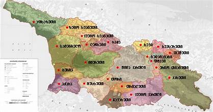

<!-- <!DOCTYPE html>
<html lang="en">
<head>
    <meta charset="UTF-8">
    <meta name="viewport" content="width=device-width, initial-scale=1.0">
    <title>საქართველოს ისტორია</title>
</head>
<body>
    <h1>გამარჯობა მე დღეს მინდა მოგითხროთ საქართველოს ისტორიის შესახებ</h1>
    <p>ოთხტომეული მოიცავს <a href="https://old.saba.com.ge/books/details/2476/" >ქართველი ხალხის უძველეს ისტორიას.</a> კონკრეტულად კი, საქართველოს ტერიტორიაზე, მოსახლე ადამიანის ისტორიას, მისი აქ პირველად გამოჩენის დროიდან ქართული ეთნოსის წარმოქმნის ხანამდე და ამ პერიოდიდან, პირველი ქართული სახელმწიფოებრივი ერთეულების ჩამოყალიბებამდე; ამ უკანასკნელთა ისტორიას, პირველი ერთიანი სახელმწიფოს წარმოქმნამდე, ძ.წ. IV-III საუკუნეების მიჯნაზე და ქართველთა ისტორიას ქრისტიანობის მიღებამდე, ანუ ახ.წ. IV საუკუნემდე. ეს არის დროის უზარმაზარი მონაკვეთი, აღსავსე უმნიშვნელოვანესი მოვლენებით.</p>
    
    
 
<button><i><u><b><a href="index 2.html" >თუ გინდათ გაიგოთ მეტი დააჭირეთ აქ </a></b></u></i></button>
</body>
</html> -->

